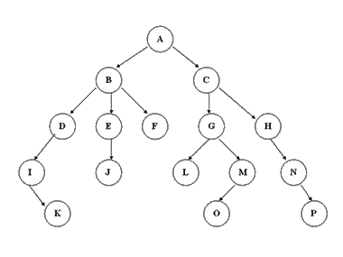
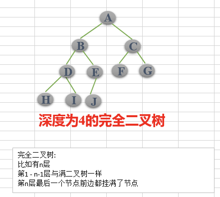
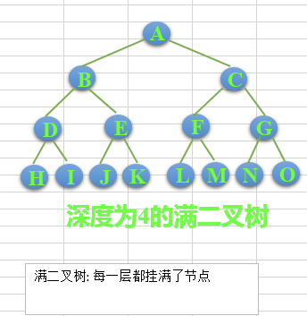

05 树与树算法
数据结构与算法
树与树算法
树
树（英语：tree）是一种抽象数据类型（ADT）或是实作这种抽象数据类型的数据结构，用来模拟具有树状结构性质的数据集合。它是由n（n>=1）个有限节点组成一个具有层次关系的集合。把它叫做“树”是因为它看起来像一棵倒挂的树，也就是说它是根朝上，而叶朝下的。它具有以下的特点：
- 每个节点有零个或多个子节点；
- 没有父节点的节点称为根节点；
- 每一个非根节点有且只有一个父节点；
- 除了根节点外，每个子节点可以分为多个不相交的子树；

树的术语
节点的度：一个节点含有的子树的个数称为该节点的度。 B的度：3, G的度：2
树的度：一棵树中，最大的节点的度称为树的度。 是B/C节点：3
叶节点或终端节点：度为零的节点。 K,G,F
父亲节点或父节点：若一个节点含有子节点，则这个节点称为其子节点的父节点。 E的父节点：B
孩子节点或子节点：一个节点含有的子树的根节点称为该节点的子节点。
兄弟节点：具有相同父节点的节点互称为兄弟节点。 D的兄弟节点：E，F
节点的层次：从根开始定义起，根为第1层，根的子节点为第2层，以此类推。 从上往下：A：1， BC：2， DEFGH：3，IJLMN：4，KOP：5
树的高度或深度：树中节点的最大层次。 最大是5
堂兄弟节点：父节点在同一层的节点互为堂兄弟。 即爷爷相同，BH互为堂兄弟
节点的祖先：从根到该节点所经分支上的所有节点。 O的祖先：ACGM
子孙：以某节点为根的子树中任一节点都称为该节点的子孙。G的子孙：LMO
森林：由m（m>=0）棵互不相交的树的集合称为森林；
###树的种类
- 无序树：树中任意节点的子节点之间没有顺序关系，这种树称为无序树，也称为自由树；
- 有序树：树中任意节点的子节点之间有顺序关系，这种树称为有序树；
- 二叉树：每个节点最多含有两个子树的树称为二叉树；
- 完全二叉树：对于一颗二叉树，假设其深度为d(d>1)。除了第d层外，其它各层的节点数目均已达最大值，且第d层所有节点从左向右连续地紧密排列，这样的二叉树被称为完全二叉树，其中满二叉树的定义是所有叶节点都在最底层的完全二叉树;
- 平衡二叉树（AVL树）：当且仅当任何节点的两棵子树的高度差不大于1的二叉树；
- 排序二叉树（二叉查找树（英语：Binary Search Tree），也称二叉搜索树、有序二叉树）；
- 霍夫曼树（用于信息编码）：带权路径最短的二叉树称为哈夫曼树或最优二叉树；
- B树：一种对读写操作进行优化的自平衡的二叉查找树，能够保持数据有序，拥有多余两个子树。
- 二叉树：每个节点最多含有两个子树的树称为二叉树；
常见的一些树的应用场景
1.xml，html等，那么编写这些东西的解析器的时候，不可避免用到树
2.路由协议就是使用了树的算法
3.mysql数据库索引
4.文件系统的目录结构
5.所以很多经典的AI算法其实都是树搜索，此外机器学习中的decision tree也是树结构
二叉树
二叉树是每个节点最多有两个子树的树结构。通常子树被称作“左子树”（left subtree）和“右子树”（right subtree）
二叉树的性质(特性)
性质1:在二叉树的第i层上至多有2^(i-1)个结点
性质2:深度为k的二叉树至多有2^k - 1个结点
性质3:对于任意一棵二叉树，如果其叶结点数为N0，而度数为2的结点总数为N2，则N0=N2+1;
性质4:具有n个结点的完全二叉树的深度必为 log2(n+1)
性质5:对完全二叉树，若从上至下、从左至右编号，则编号为i 的结点，其左孩子编号必为2i，其右孩子编号必为2i＋1；其双亲的编号必为i/2（i＝1 时为根,除外）


class Node(object):
"节点类"
def __init__(self, elem=-1, lchild=None, rchild=None):
self.elem = elem
self.lchild = lchild
self.rchild = rchild
class Tree(object):
"树类"
def __init__(self, root=None):
self.root = root
def add(self, elem):
" 为树添加节点"
node = Node(elem)
#如果树是空的，则对根节点赋值
if self.root == None:
self.root = node
else:
queue = []
queue.append(self.root)
#对已有的节点进行层次遍历
while queue:
#弹出队列的第一个元素
cur = queue.pop(0)
if cur.lchild == None:
cur.lchild = node
return
elif cur.rchild == None:
cur.rchild = node
return
else:
#如果左右子树都不为空，加入队列继续判断
queue.append(cur.lchild)
queue.append(cur.rchild)
def breadth_travel(self):
"广度遍历"
if self.root is None:
return
queue =[self.root]
while queue:
cur_node = queue.pop(0)
print(cur_node.elem,end=" ")
if cur_node.lchild is not None:
queue.append(cur_node.lchild)
if cur_node.rchild is not None:
queue.append(cur_node.rchild)
def preorder(self, node):
"递归实现先序遍历:根左右"
if node is None:
return
print(node.elem,end=" ")
self.preorder(node.lchild)
self.preorder(node.rchild)
def inorder(self, node):
"递归实现中序遍历:左根右"
if node is None:
return
self.inorder(node.lchild)
print(node.elem,end=" ")
self.inorder(node.rchild)
def postorder(self, node):
"递归实现后续遍历:左右根"
if node is None:
return
self.postorder(node.lchild)
self.postorder(node.rchild)
print(node.elem, end=" ")
tree = Tree()
tree.add(0)
tree.add(1)
tree.add(2)
tree.add(3)
tree.add(4)
tree.add(5)
tree.add(6)
tree.add(7)
tree.add(8)
tree.add(9)
tree.breadth_travel()
print("")
tree.preorder(tree.root)
print("")
tree.inorder(tree.root)
print("")
tree.postorder(tree.root)
0 1 2 3 4 5 6 7 8 9
0 1 3 7 8 4 9 2 5 6
7 3 8 1 9 4 0 5 2 6
7 8 3 9 4 1 5 6 2 0
树的遍历
树的遍历是树的一种重要的运算。所谓遍历是指对树中所有结点的信息的访问，即依次对树中每个结点访问一次且仅访问一次，我们把这种对所有节点的访问称为遍历（traversal）。那么树的两种重要的遍历模式是深度优先遍历和广度优先遍历,深度优先一般用递归，广度优先一般用队列。一般情况下能用递归实现的算法大部分也能用堆栈来实现
深度遍历 必须会
对于一颗二叉树，深度优先搜索(Depth First Search)是沿着树的深度遍历树的节点，尽可能深的搜索树的分支。
那么深度遍历有重要的三种方法。这三种方式常被用于访问树的节点，它们之间的不同在于访问每个节点的次序不同。这三种遍历分别叫做先序遍历（preorder），中序遍历（inorder）和后序遍历（postorder）。我们来给出它们的详细定义，然后举例看看它们的应用。

- 先序遍历 在先序遍历中，我们先访问根节点，然后递归使用先序遍历访问左子树，再递归使用先序遍历访问右子树
根节点->左子树->右子树
前三个元素的话： 0-1-2

def preorder(self, node):
"递归实现先序遍历:根左右"
if node is None:
return
print(node.elem)
self.preorder(node.lchild)
self.preorder(node.rchild)
- 中序遍历 在中序遍历中，我们递归使用中序遍历访问左子树，然后访问根节点，最后再递归使用中序遍历访问右子树
左子树->根节点->右子树
前三个元素的话： 1-0-2
def inorder(self, node):
"递归实现中序遍历:左根右"
if node is None:
return
self.inorder(node.lchild)
print(node.elem)
self.inorder(node.rchild)
- 后序遍历 在后序遍历中，我们先递归使用后序遍历访问左子树和右子树，最后访问根节点
左子树->右子树->根节点
前三个元素的话： 1-2-0
def postorder(self, node):
"递归实现后续遍历:左右根"
if node is None:
return
self.postorder(node.lchild)
self.postorder(node.rchild)
print(node.elem)
二叉树反推(拓展) 由遍历确定一棵树
二叉树有三种深度优先遍历方法：先序中序和后序，如果已知中序和先序，或已知中序和后序，可以确定二叉树的结构。
例：
先序：0 1 3 7 8 4 9 2 5 6
中序：7 3 8 1 9 4 0 5 2 6
1、先序找根，中序定两边
先序的特点是第一个元素是根确定0是根节点，中序的特点是根两侧分别是左右子树确定7 3 8 1 9 4 在0左边，5 2 6在0右边
所以我们反推分界初始图：
2、左右分别重复1操作
所以左侧子树的根节点是1，右侧子树的根节点是2
3、不停的重复1操作
最终的二叉树图是：
完结撒花
Jian Zhang
Ph.D. Candidate
School of Electrical Engineering and Telecommunications
My research interests include autonomous robots, hybrid dynamical systems, machine learning and intelligent systems.